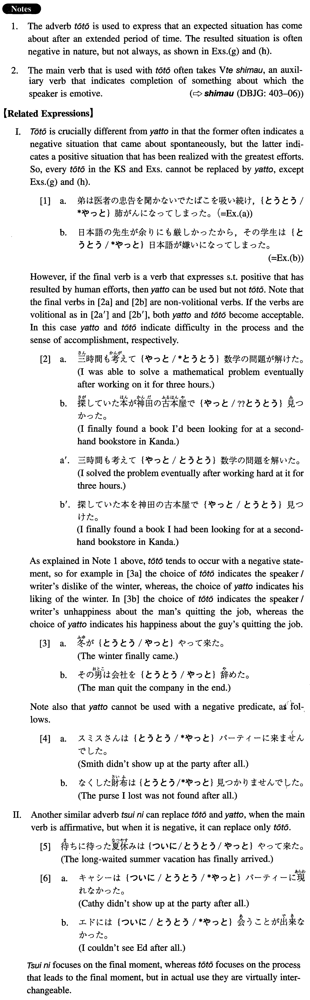

とうとう (I. 528)
- (ks).
- 朝から降りそうだった雨がとうとう降り出した。
- It's been threatening to rain since the morning and finally it started to rain. (literally: The rain which threatened to fall from the morning finally started to fall.)
- (a).
- 弟は医者の忠告を聞かないで煙草を吸い続け、とうとう肺がんになってしまった。
- My younger brother didn't take his doctor's advice and kept smoking until he finally got lung cancer.
- (b).
- 日本語の先生が余りにも厳しかったから、その学生はとうとう日本語が嫌いになってしまった。
- Because his Japanese instructor was so strict the student eventually came to hate the Japanese language.
- (c).
- その数学の問題は何時間かけても解けなかったので、とうとう諦めてしまった。
- I wasn't able to solve the mathematical problem after spending many hours on it, so I finally gave up.
- (d).
- ビルは妻との関係がだんだん悪化し、とうとう別れてしまった。
- Bill's relationship with his wife gradually deteriorated and they eventually separated.
- (e).
- この会社で働くのもとうとう今日が最後となった。
- At long last this is the last day I work at this company.
- (f).
- 十五年も飼っていた猫がとうとう老衰で死んでしまった。
- The cat we had kept for 15 years finally died of old age.
- (g).
- とうとう博士論文を書いてしまった。
- At long last I finished writing a Ph.D. dissertation.
- (h).
- 私達の結婚の日がとうとうやって来た。
- Our wedding day has finally come.
